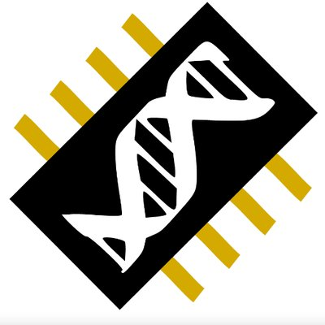

Mai 2020 - Septembre 2020
DTA Ingénierie, Nantes
Ingénieur d'Etudes et Développement Java DevOps
Projet fil rouge de fin de formation. Par groupe de 3-4, permet de mettre en application tout ce qui
a été vu lors de la
formation. L'objectif est de concevoir, réaliser et déployer avec Docker un module du Système
d'Information d'une entreprise (gestion d'absences, gestion des missions et notes de frais,
réservation d'un véhicule de service) composée d'interfaces responsives (HTML5/CSS3 et Angular 8),
d'une API REST (Spring Framework) permettant de manipuler les ressources du système d'information,
et une base de données (MySQL) gérée via Hibernate.
Missions :
- Analyse du cahier des charges
- Rédaction des spécifications fonctionnelles
- Conception de l’application (modélisation UML)
- Développement d'une interface responsive (HTML5/CSS3 et Angular 8)
- Développement d'une API de web services (Spring Framework, Rest) permettant de manipuler les ressources du système d'information
- Développement d'une base de donnée avec mySQL
- Intégration continue avec Jenkins
- Déploiement de l’application avec Docker
- Java 11
- Spring framework
- HTML5
- CSS3
- Angular 8
- Hibernate
- Jenkins
- Docker
Mars 2019 - Août 2019
Laboratoire de Biologie Computationnelle et Quantitative (Université Pierre et Marie Curie, Sorbonne Universités), Paris
Bioinformaticien
Stage de fin de formation de master 2. J'ai travaillé au sein d'une équipe de 3 personnes sur un
projet liant biologie structurale et évolution. Les missions dont j'ai été chargé se sont
concentrées sur la partie de reconstruction et de prédiction de structures de protéines d'un outil
pré-éxistant, qu'il a fallu remettre en état, mettre à jour et améliorer afin d'intégrer les
avancées de l'équipe. J'ai non seulement remis en état la partie "modélisation structurale", mais
j'ai aussi développé une méthode de reconstruction propre à l'outil, qui a été intégré à
celui-ci.
Missions :
- Remise en état et mise à jour de l'outil, portage de code de python 2 vers Python 3
- Développement d'une méthode pour la prédiction de structure de protéines spécifique à l'outil.
- Utilisation de Python et Julia lié à d'autre logiciels tiers pour arriver à une méthode fiable de reconstruction complète de protéines et de leur analyse.
- Intégration de cette méthode dans l'outil PhyloSofS : PHYLOgenies of Splicing isOForms Structures et analyse de ces résultats grâce aux autres données générées par l'équipe.
- Intégration de la méthode à l'outil existant, utilisation de cet outil pour prédire 181 structures de protéines humaines
- Présentation de l'outil et de la nouvelle méthode de reconstruction à JOBIM2019 (Journées Ouverte de Biologie, Informatique et Mathématique)
- Article scientifique paru : Transcripts' Evolutionary History and Structural Dynamics Give Mechanistic Insights Into the Functional Diversity of the JNK Family
- Python
- Julia
- Git
Mars 2018 - Juin 2018
Unité Fonctionnalité et Ingénierie des Protéines (Université de Nantes), Nantes
Bioinformaticien
Stage de fin de formation de master 1. J'ai travaillé seul (avec une très bonne supervision de mon
maître de stage) en open-space à l'amélioration d'un site web responsif permettant aux biologistes
d'utiliser des logiciels compliqués sans avoir les compétences nécéssaire pour l'utiliser de bout-en
bout. Les missions principales ont été de rendre le site fonctionnel à nouveau, mais surtout de le
rendre sécurisé, facile d'utilisation et d'y ajouter des analyses automatiques.
Missions :
- Mise à jour du site et portage de code de Python 2 vers Python 3
- Sécurisation du site pour empêcher les maladresses d'utilisateurs
- Ajout de fonctionnalités tel que différents calculs automatiques sur les protéines
- Ajout de pages d'analyses automatiques
- Amélioration du site qui a été rendu fonctionnel, sécurisé et utilisable
- Article scientifique paru : DockNmine, a Web Portal to Assemble and Analyse Virtual and Experimental Interaction Data
- Python
- Django
- HTML/CSS/Bootstrap
- JavaScript
- Git